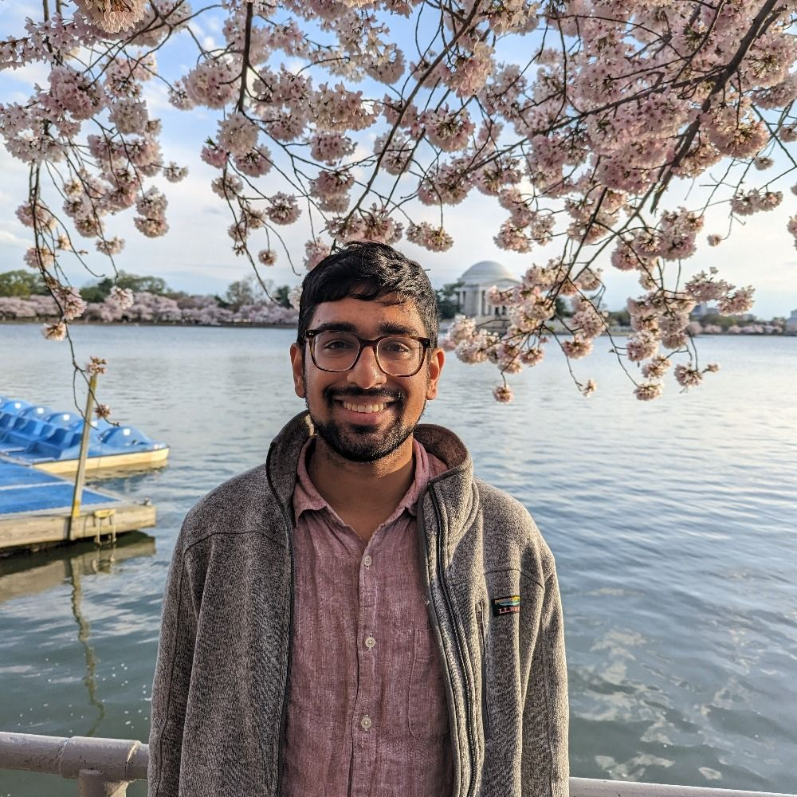

|
Sathvik Nair
I'm a PhD student in Linguistics at the University of Maryland, advised by Profs. Philip Resnik and Colin Phillips.
I'm interested in the interaction between language-specific information and domain-general cognitive processes during language comprehension, with a particular focus on prediction.
To address these questions, I combine technological advances from NLP (mostly language models) with data and insights from psycholinguistics.
My research is supported by the NSF GRFP.
Originally from the Bay Area, I graduated from UC Berkeley with bachelor's degrees in Cognitive Science and Computer Science.
There, I closely collaborated with Dr. Stephan Meylan on projects in Profs. Mahesh Srinivasan and Tom Griffiths' groups.
Afterwards, I worked as a software engineer at Amazon Web Services in Boston and decided to stay on the East Coast for grad school. I generally accept he/him pronouns.
Email |
Twitter |
Github |
LinkedIn |
Semantic Scholar |
Google Scholar |
CV
|

|
|
News & Highlights
September 2024: Papers accepted at EMNLP Findings (on semantic roles) and CoNLL (syntactic generalization)!
June 2024: Gave my first conference talk on tokenization at SciL at UC Irvine!
May 2024: Presented my work on tokenization at HSP at UMich!
April 2024: Awarded the NSF GRFP!
February 2024: Gave a Language Science Lunch Talk on my background and research goals at the Maryland Language Science Center!
January 2024: Facilitated an interactive session on workshop on LLMs
at the Maryland Language Science Center's Winter Storm series.
December 2023: Presented my first paper of grad school on tokenization and modeling reading times at EMNLP in Singapore!
March 2023: Presented on the relationship between words and context at HSP 2023 in Pittsburgh!
April 2022: Awarded a NSF GRFP Honorable Mention!
December 2021: Paper published in Cognition!
December 2020: Presented a paper based on my thesis at the CogALex workshop at COLING 2020!
May 2020: Awarded Highest Honors and the Glushko Prize for Outstanding Undergraduate Research in Cognitive Sciences for my thesis on polysemy!
|
|
Research
My work has two major focuses.
The first investigates how to use different measures from language models to operationalize psycholinguistic hypotheses
by evaluating their generalizations from morphosyntactic to semantic to world knowledge.
The second seeks use language models in service of cognitively realistic models of sentence comprehension by incorporating linguistic information into their subword representations and integrating them with more mechanistic theories of prediction during language processing.
|
Publications
Katherine Howitt, Sathvik Nair, Allison Dods, & Robert Hopkins (2024). Generalizations across filler-gap dependencies in neural language models. Accepted to CoNLL.
Eun-Kyoung Rosa Lee, Sathvik Nair & Naomi Feldman (2024). A Psycholinguistic Evaluation of Language Models' Sensitivity to Argument Roles. Accepted to EMNLP Findings.
Sathvik Nair & Philip Resnik (2023). Words, Subwords, and Morphemes: What Really Matters in the Surprisal-Reading Time Relationship?
EMNLP Findings
[link]
[pdf]
Stephan Meylan, Sathvik Nair, & Tom Griffiths (2021). Evaluating Models of Robust Word Recognition with Serial Reproduction. Cognition
[link]
[pdf]
Sathvik Nair, Mahesh Srinivasan, & Stephan Meylan (2020). Contextualized Word Embeddings Encode Aspects of Human-Like Word Sense Knowledge. Proceedings of the Workshop on the Cognitive Aspects of the Lexicon
(CogALex) at COLING 2020
[link]
[pdf]
Peer-Reviewed Conference Presentations
Sathvik Nair, Katherine Howitt, Allison Dods & Robert Hopkins. LMs are not good proxies for human language learners.
Accepted as Talk at BUCLD 2024
Sathvik Nair & Philip Resnik. Words, Subwords, and Morphemes: What Really Matters in the Surprisal-Reading Time Relationship?
Talk at SciL 2024, [abstract]
Sathvik Nair., Colin Phillips, & Philip Resnik. Words, Subwords, and Morphemes: Surprisal Theory and Units of Prediction.
Poster at HSP 2024 [abstract]
Katherine Howitt, Sathvik Nair, Allison Dods & Robert Hopkins (2024) Acquiring generalizations across unbounded dependencies: How language models can provide insight into first language acquisition. Poster at MASC-SLL 2024
Sathvik Nair, Konstantine Kahadze & Philip Resnik. The Impacts of Subword Tokenization on Psycholinguistic Modeling. Poster at MASC-SLL 2024
Sathvik Nair, Shohini Bhattasali, Philip Resnik & Colin Phillips. How far does probability take us when measuring psycholinguistic fit? Evidence from Substitution Illusions and Speeded Cloze Data.
Poster at HSP 2023 [abstract]
Collaborators, Mentors, Friends, and other Co-Conspirators
Research is never done in a vacuum, and publications don't reflect everyone who's intellectually influenced me. Here are some of those people.
Many are connected with UMD's CLIP Lab and Language Science Center, which bring together researchers approaching computation and language (more broadly) from all sorts of perspectives.
- UMD Cohort: Sebastián Mancha, Utku Türk, Sarah Boukendour,
Cassandra Caragine, Lydia Quevedo, Allison Dods,
Malhaar Shah, Sathvik Nair (SUS CLAMS for short)
- Labmates: Katherine Howitt, Rosa Lee, Rupak Sarkar,
Alexander Hoyle, Dr. Pranav Goel,
London Dixon, Dr. Masato Nakamura, Allison MacDonald, Carmen Tang,
Joselyn Rodriguez, Neha Srikanth, Maharshi Gor,
Yu (Hope) Hou, Nishant Balepur,
Zongxia Li, Ishani Mondal
- Undergraduate Collaborators (* = direct mentorship): Konstantine Kahadze*,
Robert Hopkins*,
Chiebuka Ohams
- Teachers and Mentors: Prof. Naomi Feldman, Prof. Shohini Bhattasali,
Prof. Ellen Lau,
Prof. Alexander Williams,
Prof. Yi Ting Huang,
Prof. Bob Slevc,
Dr. Shevaun Lewis,
Prof. Rachel Rudinger,
Prof. Hal Daumé III,
Dr. Ruthe Foushee,
Prof. Cassandra Jacobs,
Prof. Suhas Arehalli
|
Teaching
At UMD:
At UC Berkeley:
|
|
Miscellaneous
Other projects (not just academic) and information.
- If you're applying to grad school in (computational) cognitive/language sciences and/or the GRFP, please reach out! I'm also happy to share my materials upon request.
- I've helped out with a couple software tools for open and reproducible science:
Large Language Models & Levels of Analysis: What 40-year-old Neuroscience Research can Tell Us About Modern AI
– Applying fundamental ideas from cognitive science (Marr's levels of analysis) to explain various kinds of language models and argue how we can't say LLMs "understand" language like humans do.
GPT-3: An AI Breakthrough, but not Coming for Your Job
– Article describing GPT-3, reactions from the press and experts, and research-backed opinions on the technology's limitations for Skynet Today (AI news publication). Coauthored with Daniel Bashir
How Biases in Language get Perpetuated by Technology
– Towards Data Science article on personal project investigating gender, racial, and religious bias through analogy evaluation with static word embeddings (GloVe)
Workshop on NLP/ML– given at the Spectra 3.0 hackathon.
Presented overview of the field and sentiment classification demo on tweets related to mental health.
Letters for Black Lives- I was involved with writing & curating resources for the South Asian community on anti-Blackness, including Hindi translation.
Here are some organizations whose work I care about: DMV Mutual Aid, Kalama Mutual Aid, Queer in AI, Bay Area Solidarity Summer
In my spare time, I enjoy playing violin & South Asian percussion, cooking, and exploring the DC area by foot and public transit.
|
Website Template
|